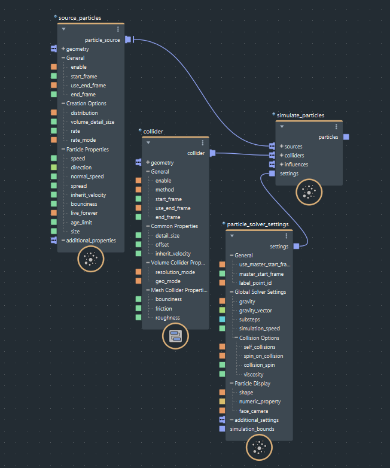

此处概述了如何设置基本粒子模拟，以及对其进行修改以获得不同的效果。
在图表顶层，添加 basic_particles_graph 节点。它没有输入或输出，因为它只是一个包含基本图表的复合。
右键单击此项，然后选择“炸开”。这将展开复合的内容。它由连接到 simulate_particles 节点的 source_particles、collider 和 particle_solver_settings 节点组成。
若要从几何体发射粒子，请将一个或多个网格或其他受支持的几何对象连接到 source_particles 的 geometry 端口。
将 simulate_particles 节点的 particles 输出连接到图表的 output 节点作为新端口。将在场景中创建名为 bifrostGraph 的 Bifrost 对象。
现在，可以播放场景以查看从源几何体发射的粒子。但是，这可能不是您想要的最终效果，因此需要对其进行进一步的编辑。